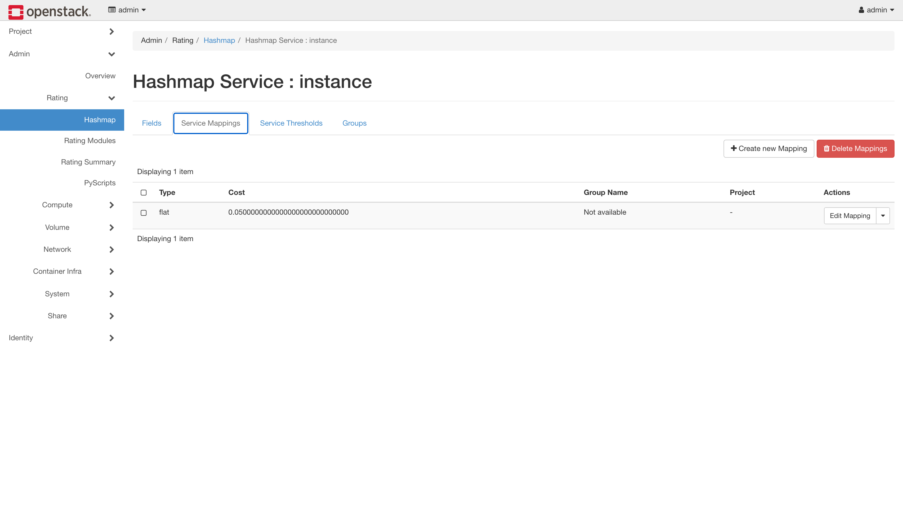
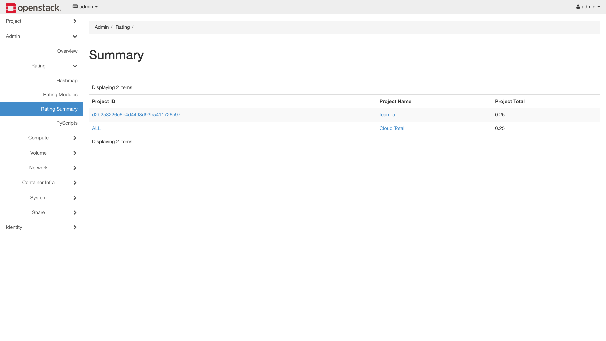

Day 30: 計費——用量變成帳單¶
Day 27 給了分帳的對象,Day 28 給了分帳的依據,Day 29 讓數字產生後果。今天把它們變成錢:CloudKitty 讀 Prometheus 裡的用量,套上訂價規則,吐出每個租戶各自的帳單——全程不碰 Gnocchi。本章最值錢的一顆雷叫做「帳單永遠 0 元,而且沒有任何錯誤」,它的根因不是 bug,是一個沒人告訴你的開關。

你在課程的哪裡
- Day 27–29:租戶結構、計量管線、自動反應都就緒。
- 今天:階段三——用量變帳單,兩個租戶各拿各的。
- 今天之後:Day 31 進入階段四,回多機環境談 SLA 與自癒。
第一次接觸雲端計費?先讀這段¶
CloudKitty 做的事只有一句話:定期把「誰用了多少」乘上「單價」,存成帳單。但它把這件事拆成四個可以各自替換的零件,而今天四個都要動:
| 零件 | 回答什麼問題 | 本課的選擇 |
|---|---|---|
| fetcher | 要對誰計費? | Keystone(列出租戶) |
| collector | 他用了多少? | Prometheus(kolla 預設是 gnocchi) |
| rating module | 這些用量值多少錢? | hashmap(預設是 noop) |
| storage | 帳單存哪? | OpenSearch(重用 Day 21 的) |
第一個零件是今天最大的雷。直覺會認為「雲裡有幾個專案就對幾個計費」——不是的,fetcher 有它自己的一套挑選規則,而預設挑出來是零個。
另外兩個名詞今天會反覆出現:
- period(週期):計費的時間顆粒,預設 3600 秒。帳單是一小時一格算出來的。
- wait_periods:等幾個週期才結算,預設 2。所以帳單永遠落後現在約兩小時——這不是故障。
原理與架構¶
flowchart TB
KS["Keystone fetcher<br/>要對誰計費"] ==> PROC["cloudkitty-processor"]
PROM["Prometheus<br/>(Day 28 的用量)"] ==> PROC
PROC ==>|"套 hashmap 訂價"| RATE["每個週期<br/>× 每個租戶 = 一筆帳"]
RATE ==> OS["OpenSearch<br/>(Day 21 建的)"]processor 每一輪做的事:問 fetcher 有哪些租戶 → 對每個租戶,把還沒算的週期一個一個補算 → 每個週期去 Prometheus 查用量 → 乘上單價 → 存進 OpenSearch。
它送去 Prometheus 的查詢長這樣(由 metrics.yml 組出來):
看懂這條查詢,今天就懂一半了:一小時的窗口內,每台機器(resource_id)只要出現過就算 1 台——這正是「機器時數」的定義,而且 project_id 讓它自動分租戶。Day 28 那個 label 在這裡兌現。
為什麼是帶窗口的查詢,而不是 count(power_state)
Day 28 地雷 5 記過:Pushgateway 會永遠記得已經刪掉的機器。max_over_time(...[3600s]) 有時間窗口,舊資料滑出窗外就不算;但 instant query 沒有窗口,幽靈機器會被收錢。CloudKitty 用的是前者,算它避開了一劫——但你自己寫查詢時要記得這件事。
步驟¶
步驟 1:三行 globals¶
sudo tee -a /etc/kolla/globals.yml << 'EOF'
# Day 30: CloudKitty 計費(prometheus collector + 重用 Day 21 的 OpenSearch)
enable_cloudkitty: "yes"
cloudkitty_collector_backend: "prometheus"
cloudkitty_storage_backend: "opensearch"
EOF
source ~/kolla-venv/bin/activate
kolla-ansible deploy -i ~/all-in-one --tags cloudkitty
只要三行,是因為 kolla 的預設值已經幫你對好了其餘的:cloudkitty_opensearch_url 自動指向 Day 21 的 OpenSearch,cloudkitty_prometheus_url 自動指向 Day 21 的 Prometheus。
kolla 的預設 collector 是 gnocchi
cloudkitty_collector_backend 不寫的話是 gnocchi——Day 26 講的「教科書路線」在這裡是預設值。要走 Prometheus 必須明確指定。
同一個 Prometheus,兩種待遇
值得跟 Day 29 對照一下。kolla 的 cloudkitty.conf 模板長這樣:
[collector_prometheus]
prometheus_url = {{ cloudkitty_prometheus_url }}
prometheus_user = admin
prometheus_password = {{ prometheus_password }}
basic auth 直接幫你接好了。 而昨天的 Aodh,同一個 Prometheus,你得把帳密內嵌進 host 字串才進得去。這就是整合成熟度的差異——同一個生態系裡,不同專案跟同一個依賴的接合程度可以差這麼多。
步驟 2:寫 metrics.yml(kolla 不給你)¶
kolla 的 cloudkitty role 沒有 metrics.yml 模板,所以容器裡用的是套件內建那份——而那份是為 gnocchi 寫的(指標名叫 image.size,extra_args 裡是 resource_type、force_granularity 這些 gnocchi 專屬的東西)。改用 Prometheus collector,這份計量對應規則得自己寫(地雷 2)。
先看手上有什麼原料(Day 28 推上去的指標):
curl -s -u admin:$PW --get http://10.0.0.4:9091/api/v1/query \
--data-urlencode 'query={job="openstack-telemetry"}'
power_state 4 條序列 ← 機器存在 = 計費主軸
volume_size 4 條序列 ← 儲存 GB
cpu 4 條序列
memory_usage 4 條序列
network_incoming_bytes 4 條序列
...
挑兩個對應到雲端帳單的兩大項:
sudo mkdir -p /etc/kolla/config/cloudkitty
sudo tee /etc/kolla/config/cloudkitty/metrics.yml << 'EOF'
metrics:
# 機器時數:power_state 開機中為 1,NUMBOOL 把任何非零轉成 1
power_state:
unit: instance
alt_name: instance
groupby:
- project_id
- resource_id
mutate: NUMBOOL
extra_args:
aggregation_method: max
# 儲存:volume_size 單位已是 GiB
volume_size:
unit: GiB
alt_name: volume
groupby:
- project_id
- resource_id
extra_args:
aggregation_method: max
EOF
三個欄位值得說明:
alt_name——這是帳單上的服務名稱,等一下訂價規則要用同一個名字,對不上就不會計價。mutate: NUMBOOL——power_state的值是 1(開機中),NUMBOOL 把任何非零轉成 1,於是「一台機器一小時」就是數量 1。groupby必須包含project_id——那是scope_key,分租戶靠它。
不要試錯部署,用 CloudKitty 自己的 schema 先驗:
sudo docker cp /etc/kolla/config/cloudkitty/metrics.yml cloudkitty_api:/tmp/m.yml
sudo docker exec cloudkitty_api python3 -c "
import yaml
from cloudkitty import collector
from oslo_config import cfg
cfg.CONF(['--config-file','/etc/cloudkitty/cloudkitty.conf'], project='cloudkitty')
print('生效的 collector =', cfg.CONF.collect.collector)
for k,v in collector.validate_conf(yaml.safe_load(open('/tmp/m.yml'))).items():
print('✅', k, '| groupby =', v.get('groupby'))
"
生效的 collector = prometheus
✅ power_state@#instance | groupby = ['resource_id', 'project_id']
✅ volume_size@#volume | groupby = ['resource_id', 'project_id']
一定要在 cloudkitty_api 容器裡驗
用一個乾淨的容器跑這段驗證,會得到:
resource_type 是 gnocchi 的必填欄位。乾淨容器沒有 cloudkitty.conf,collector 吃到預設值 gnocchi,於是拿 gnocchi 的 schema 來驗 prometheus 的設定——錯誤訊息完全誤導。驗證工具本身也需要正確的環境,這個坑會讓你去改一個根本沒問題的檔案。
重新部署套用:kolla-ansible deploy -i ~/all-in-one --tags cloudkitty
步驟 3:訂價規則¶
先看計費模組的現況:
noop 是啟用的,hashmap 是關的。 noop 的意思正如其名——什麼都不算。不改這個,帳單永遠 0 元,而且不會有任何錯誤(地雷 3)。
openstack rating module enable hashmap
IID=$(openstack rating hashmap service create instance -f value -c "Service ID")
VID=$(openstack rating hashmap service create volume -f value -c "Service ID")
instance 和 volume 這兩個名字必須跟 metrics.yml 的 alt_name 一模一樣。
接著訂價——每台機器每小時 $0.05、每 GiB 每小時 $0.01。CLI 在這一步會壞掉(地雷 5),直接打 API:
TOKEN=$(openstack token issue -f value -c id)
CK=http://10.0.0.4:8889
for pair in "$IID:0.05" "$VID:0.01"; do
curl -s -X POST "$CK/v1/rating/module_config/hashmap/mappings" \
-H "X-Auth-Token: $TOKEN" -H "Content-Type: application/json" \
-d "{\"service_id\":\"${pair%:*}\",\"type\":\"flat\",\"cost\":\"${pair#*:}\"}"
done
✅ cost= 0.0500000000000000000000000000 | type= flat
✅ cost= 0.0100000000000000000000000000 | type= flat
建好之後在 Horizon 的 Admin → Rating → Hashmap → (點 service) → Service Mappings 看得到同一筆:

CLI 壞了,滑鼠沒壞
注意右上角那顆 + Create new Mapping——這一頁做得到那個壞掉的 CLI 做不到的事。如果你不想打 curl,整個步驟 3 都可以在這裡用點的:Create new Service 建 instance / volume,再進來 Create new Mapping 填 flat + 0.05。
這是本章少數「圖形介面比命令列可靠」的地方,值得記著。
步驟 4:告訴 CloudKitty 要對誰計費¶
這是今天最重要的一步,也是最多人卡死的地方。 到目前為止一切正常,但帳單是 0:
零錯誤、零警告。processor 的 debug log 裡只有一行輕描淡寫的話:
要計費的租戶有 0 個。 根因在原始碼裡(地雷 1):CloudKitty 只對「cloudkitty 服務帳號持有 rating 角色」的專案計費。kolla 建了這個角色,卻沒指派給任何專案。
所以這一步的本質是:這是「哪些專案要計費」的開關。
CKUSER=$(openstack user show cloudkitty -f value -c id)
for P in team-a team-b; do
openstack role add --user $CKUSER --project $P rating
done
sudo docker restart cloudkitty_processor # 別等一小時,見地雷 4
步驟 5:驗收——逐週期對帳¶
{"columns": ["begin", "end", "qty", "rate", "project_id"],
"results": [["2026-07-01T00:00:00+00:00", "2026-08-01T00:00:00+00:00",
5.0, 0.2500000037252903, "d2b258226e6b4d4493d93b5411726c97"]]}
team-a:5 機器時 = $0.25。 拆開看明細(GET /v2/dataframes,整理後):
| 週期 | 計費項 | 機器 | 小計 |
|---|---|---|---|
| 11:00–12:00 | instance × 1 | 83b15110(meter-vm) |
$0.05 |
| 12:00–13:00 | instance × 4 | 83b15110、f621a28d、bf256add、6fc3c0f3 |
$0.20 |
11:00 那小時 team-a 只有一台;12:00 那小時有四台——多的三台正是 Day 29 那些自動生滅的 ASG 機器。它們只活了幾十分鐘,帳單照樣算到了。
最後跟 Prometheus 逐週期對帳,這才是驗收:
| 週期 | 租戶 | Prometheus 用量 | CloudKitty 收費 |
|---|---|---|---|
| 11:00–12:00 | team-a | 1 台 | 1 × $0.05 |
| 11:00–12:00 | team-b | 0 台 | $0 |
| 12:00–13:00 | team-a | 4 台 | 4 × $0.05 |
| 12:00–13:00 | team-b | 0 台 | $0 |
| team-a 合計 | 5 台時 | $0.25 |
一格一格對得上。 而 team-b 收 $0 不是廢話——它證明分租戶的歸屬沒有外洩。如果 scope_key 壞掉,team-a 的用量會漏到 team-b 身上,兩邊都會有錢。
對帳要逐週期比,不要拿總和比單期
拿「12:00 那個週期的 4 台」去比「帳單總額 5」,會得出「CloudKitty 算錯了」的結論——5 是兩個週期的總和(1 + 4),不是單一週期的數字。 帳單是時間的積分,不是某一刻的快照——這個直覺不建立起來,對帳永遠對不完。
帳單畫面¶
Day 26 說過帳單畫面要回 Horizon 看(Skyline 沒有計費外掛)。位置在 Admin → Rating → Rating Summary:

畫面上的 0.25 跟你剛才從 API 讀到的完全一致,Project Name 那欄直接把 project_id 翻成 team-a。
CloudKitty 的儀表板一共五頁,這一天做的每件事都有對應的圖形版:
| 位置 | 做什麼 | 對應本章 |
|---|---|---|
| Admin → Rating → Hashmap | 建 service 與費率 | 步驟 3 |
| Admin → Rating → Rating Modules | 開關 hashmap / noop / pyscripts | 步驟 3、地雷 3 |
| Admin → Rating → Rating Summary | 分租戶帳單(上圖) | 步驟 5 |
| Admin → Rating → PyScripts | 用 Python 寫複雜計費邏輯 | 本章沒用到 |
| Project → Rating | 租戶自己查帳單與報表 | — |
這是 Sprint 5 到目前為止唯一有畫面的服務。 Ceilometer 與 Aodh 連一個面板都沒有(Day 28 與 Day 29 各有一則說明講原因)——計量與告警是機器在讀的,帳單才是給人看的,這個分野很合理。
這個頁面差點沒出現——--tags cloudkitty 不會碰 Horizon
kolla 的 enable_horizon_cloudkitty 預設跟著 enable_cloudkitty 一起開,照理說裝完就有。但本課環境打開頁面時選單裡什麼都沒有——因為步驟 1 只跑了 --tags cloudkitty,Horizon 從頭到尾沒被重新部署過,設定檔還停在沒有 cloudkitty 的版本。
這是 Day 28 地雷 3 一字不差的翻版:跨服務的 flag,--tags A 永遠不夠。同一顆雷在這個 Sprint 已經是第三次了(Day 21 的 Skyline、Day 28 的通知、今天的 Horizon)——它會一直來,因為 kolla 的開關和它影響的服務,本來就不是同一個名字。
驗收 checkpoint¶
逐項驗證,全部符合判準才算完成今天:
| 驗證 | 判準 | 本課環境的結果 |
|---|---|---|
| 部署 | api / processor 容器 healthy | 符合 |
| storage | 重用 Day 21 的 OpenSearch,不新增資料庫 | 符合 |
| metrics.yml | 通過 CloudKitty 自己的 schema 驗證 | 兩條規則都過 |
| 訂價 | hashmap 啟用,費率建立成功 | instance $0.05 / volume $0.01 |
| 有租戶被計費 | Number of tenants to rate > 0 |
指派 rating 角色後為 2 |
| 帳單對得上用量 | 逐週期比對 Prometheus 與 CloudKitty | 1↔1、4↔4,合計 5 台時 = $0.25 |
| 租戶歸屬 | team-b 無用量 → 無費用(沒被汙染) | $0 |
| Horizon 帳單頁 | Admin → Rating → Rating Summary 顯示分租戶金額 | 符合(需補跑 --tags horizon) |
| 雙租戶帳單 | 兩個租戶都有帳單、金額不同、互不汙染 | team-a $0.75 / team-b $0.16(補驗) |
| 儲存計費 | volume 產生實際費用 | team-a $0.10 / team-b $0.06(補驗) |
地雷記錄¶
地雷 1:帳單永遠 0 元,因為沒有任何租戶被計費¶
症狀:部署成功、費率建好、Prometheus 有資料、processor 健康、零錯誤。帳單就是 0。
判讀關鍵:把 debug 打開(cloudkitty_logging_debug: "yes" 後重新部署),真相只有一行:
根因:讀原始碼就明白了:
# cloudkitty/fetcher/keystone.py
if not ignore_rating_role:
roles = self.admin_ks.roles.list(user=my_user_id, project=tenant)
if 'rating' not in [role.name for role in roles]:
tenant_list.remove(tenant) # ← 沒有 rating 角色 → 直接移除
CloudKitty 只對「cloudkitty 服務帳號在該專案上持有 rating 角色」的專案計費。 kolla 把角色建出來了,但沒指派給任何專案——所以全新安裝的預設狀態就是「零個租戶」。
解法:
CKUSER=$(openstack user show cloudkitty -f value -c id)
openstack role add --user $CKUSER --project team-a rating
或者對所有專案計費:[fetcher_keystone] ignore_rating_role = true。
教訓:這不是 bug,是設計——它是「哪些專案要計費」的 opt-in 開關,只是沒有任何地方告訴你它存在。這是本課程「錯了不會叫」家族最貴的一顆:帳單系統靜靜地對零個客戶收零元,而每一個健康檢查都是綠的。
通則:當一個系統「成功地產出空結果」時,先問「它認為它該處理的東西有哪些」,而不是去查「它處理得對不對」。這顆雷會把你引去查 metrics.yml、查 Prometheus、查訂價規則——而那些全都是對的,錯的是那份工作清單本身是空的。
地雷 2:kolla 讓你選 Prometheus,卻不給你對應的 metrics.yml¶
症狀:cloudkitty_collector_backend: "prometheus" 設了,部署也成功,但 CloudKitty 拿著一份寫著 image.size、resource_type、force_granularity 的計量規則去查 Prometheus。
根因:kolla 的 cloudkitty role 的 templates/ 底下只有 cloudkitty.conf.j2、cloudkitty-api.json.j2、cloudkitty-processor.json.j2、wsgi-cloudkitty.conf.j2——沒有 metrics.yml。所以容器用的是套件內建的預設,而那份是為 gnocchi 寫的。
解法:自己寫 /etc/kolla/config/cloudkitty/metrics.yml(見步驟 2)。
教訓:「這個選項存在」不等於「這條路是通的」。 kolla 讓你把 collector 設成 prometheus,語法檢查會過、部署會成功——但配套的計量規則要你自己補,而它不會提醒你。遇到「換了後端」這類設定時,養成一個習慣:問一句「這個後端需要的其他檔案,是誰負責產生?」
地雷 3:noop 模組預設啟用,一切算 0 元¶
症狀:帳單 0 元(是的,今天有兩顆不同的雷都長這樣)。
根因:CloudKitty 出廠時啟用的計費模組是 noop——它不計價。hashmap 預設關閉。
解法:openstack rating module enable hashmap,並確認:
教訓:跟地雷 1 合起來看更有意思——同一個症狀(0 元)有兩個完全不同的根因,一個在「要對誰計費」,一個在「怎麼算錢」。這正是為什麼除錯要先分層:先確認有沒有工作進來,再確認工作做得對不對。 順序反了會繞很久。
地雷 4:processor 每輪睡整整一小時¶
症狀:指派完 rating 角色,等了 20 分鐘,帳單還是 0,scope 狀態表空的。
根因:internal_run 的最後一行:
LOG.debug("Finished processing all storage scopes with worker ...")
# FIXME(sheeprine): We may cause a drift here
time.sleep(CONF.collect.period)
CONF.collect.period 是 3600。processor 跑完一輪就睡一小時——它在 14:07 那輪看到 0 個租戶,接著睡到 15:07。我 14:08 做的設定變更,它要一小時後才會發現。
解法:重啟它。
教訓:注意 [collect] period 同時是「計費週期」和「processor 的輪詢間隔」——兩個完全不同的概念綁在同一個參數上。想讓它反應快就得縮短計費週期,而那會改變帳單的顆粒度。這是設計上的疙瘩,而上游自己也知道(那行 FIXME 就掛在旁邊)。
實務上:改完任何 CloudKitty 設定,重啟 processor,別等。
地雷 5:rating hashmap mapping create 在 2025.1 直接壞掉¶
症狀:
{"faultcode": "Client", "faultstring": "Unknown attribute for argument mapping_data: name",
"debuginfo": null} (HTTP 400)
根因:python-cloudkittyclient 6.1.0 送了一個 name 欄位,而 CloudKitty 22.0.1(2025.1)的 API 不認得。CLI 與 API 版本不同步。
解法:兩條路都行——繞過 CLI 直接打 API(見步驟 3),或者乾脆用 Horizon 的 Hashmap 頁點一點(那顆 + Create new Mapping 做得到 CLI 做不到的事)。同一族的還有幾個:
| 指令 | 症狀 |
|---|---|
openstack rating storage dataframe get |
這版根本沒這個指令 |
GET /v1/scope/state |
405 Method Not Allowed |
GET /v1/storage/dataframes?limit=2 |
Unknown argument: "limit" |
都改用 v2:/v2/scope、/v2/dataframes、/v2/summary。
教訓:CLI 壞掉不代表功能壞掉。 這幾顆都只是客戶端跟服務端版本對不上,底下的 API 好端端的。遇到 CLI 報奇怪的參數錯誤時,先用 curl 打一次 API 確認功能本身在不在——這個習慣今天省了很多時間,Day 29 地雷 5 也是靠它。
還有一顆:全新的 scope 從「當月 1 號」開始算
# cloudkitty/utils/__init__.py
def check_time_state(timestamp=None, period=0, wait_periods=0):
if not timestamp:
return tzutils.get_month_start()
月中安裝的話,processor 得先把當月 1 號到現在的空白週期全部補跑一遍才會走到有資料的時段。本課環境是 7/14 裝的,所以它磨了 326 個週期 × 2 個租戶 = 652 次——好消息是 Worker.run() 是個 while 迴圈,一輪之內全部追完,只花了 4 秒。看到帳單暫時是 0,先確認它是不是還在補跑。
補完:雙租戶帳單 + 儲存計費¶
寫這章的當下有兩個缺口:team-b 沒有資源(雙租戶對比退化成 $0.25 vs $0)、volume_size 規則寫了但沒磁碟可算。這兩件事的補驗只差「時間」——period=3600 + wait_periods=2 意味著新用量要兩到三小時後才結算。所以在 Day 32 開機做 TLS 時,順手替兩個租戶種下 VM 與 volume,讓計費週期在部署期間自己跑。三小時後收帳:
| 租戶 | 計費項 | 用量 | 費率 | 金額 |
|---|---|---|---|---|
| team-a | instance | 13 台時 | $0.05 | $0.65 |
| team-a | volume | 10 GiB 時 | $0.01 | $0.10 |
| team-b | instance | 2 台時 | $0.05 | $0.10 |
| team-b | volume | 6 GiB 時 | $0.01 | $0.06 |
兩個缺口一次補齊:team-a 收 $0.75、team-b 收 $0.16——兩個租戶都有帳單、金額各自不同,不再是退化案例;而且 volume 這個計費項真的產生了費用($0.10 與 $0.06),儲存計費不再是紙上談兵。四筆金額全部逐項對得上費率(13×0.05、10×0.01、2×0.05、6×0.01)。
這也讓今天的核心結論從「單租戶對得上」升級成完整的商業場景:兩個真實租戶、兩種計費項(機器 + 儲存)、各自的帳單、金額互不汙染。 這才是一朵雲「能當生意經營」該有的樣子。
帶得走的東西¶
- 當一個系統「成功地產出空結果」時,先問它認為該處理的東西有哪些,而不是查它處理得對不對。帳單 0 元的兩個根因(沒租戶、noop 模組)都在工作清單那一層,不在計算那一層。
- 帳單是時間的積分,不是某一刻的快照。 對帳要逐週期比,拿總和比單期一定得出「算錯了」的錯誤結論。
- 同一個依賴,不同專案的接合程度可以差很多。 同一座 Prometheus:CloudKitty 的模板幫你把帳密接好,Aodh 要你自己內嵌進 host 字串。遇到整合問題,先確認這條路有沒有人真的走過。
- CLI 壞掉不代表功能壞掉。 客戶端與服務端版本不同步是常態;報奇怪的參數錯誤時,先用 API 或圖形介面確認功能本身在不在。
- 「這個選項存在」不等於「這條路是通的」。 換後端時要問:這個後端需要的其他檔案,是誰負責產生?沒人負責的,就是你。
延伸閱讀¶
想往下深挖,從這幾份開始:
- CloudKitty 官方文件 —— collector / fetcher / rating module / storage 四個零件的完整說明。
- CloudKitty 的 Prometheus collector ——
metrics.yml的完整 schema,以及query_prefix/range_function等本章沒用到的進階選項。 - hashmap 計費模組 —— 本章只用了最簡單的
flat;分級費率(threshold)、依 flavor 差別訂價都在這份。 - Kolla-Ansible 的 CloudKitty 指南 —— 本章 globals 三行設定的官方對照。
下一步¶
雲會自己收錢了。階段三結束——這朵雲現在說得出誰用了多少、值多少錢。
Day 31 進入階段四的第一天,也是 Sprint 5 唯一要回多機環境的一天:Masakari 自癒——VM 的程序死掉自動重啟,compute 整台掛掉,VM 自動搬到別台去。